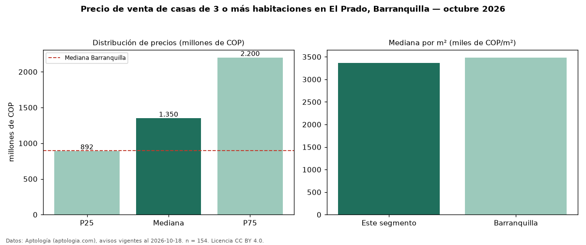

Precio de venta de casas de 3 o más habitaciones en El Prado, Barranquilla — octubre 2026
En El Prado, Barranquilla, la mediana de precio de venta de casas de 3 o más habitaciones es COP 1,35 mil millones, según 154 avisos vigentes. Frente a la mediana de Barranquilla para casas de 3 o más habitaciones (COP 900 millones), queda 50 % por encima. Por metro cuadrado, la mediana es COP 3,36 millones/m² (n = 154 avisos con área), 4 % por debajo de Barranquilla (COP 3,48 millones/m²). Son 83 % de los 186 avisos de casas en venta de la zona, cuya mediana general es COP 1,40 mil millones (−4 %). Con el precio por m² de arriendo del mismo segmento (COP 26.667/m² al mes), la rentabilidad bruta implícita es 9,5 % anual (aproximación con medianas de ofertas distintas). El área mediana anunciada es 404 m². La mitad central de los avisos va de COP 892 millones a COP 2,20 mil millones (razón 2,5), una dispersión alta. El estrato más frecuente es 5 (38 % de los avisos con estrato). Datos: Aptología (aptologia.com), CC BY 4.0 — https://www.aptologia.com/casas-en-venta/barranquilla/el-prado. Archivos: PDF, CSV con las cifras y gráfica PNG.

| Avisos únicos | 154 |
|---|---|
| Percentil 25 | COP 892.500.000 |
| Mediana | COP 1.350.000.000 |
| Percentil 75 | COP 2.200.000.000 |
| Mediana por m² | COP 3.360.138 |
Fuente: avisos vigentes de portales inmobiliarios recopilados por Aptología, deduplicados (mínimo 30 avisos únicos por celda). Precios pedidos, no cerrados. Fecha: 2026-10-18.